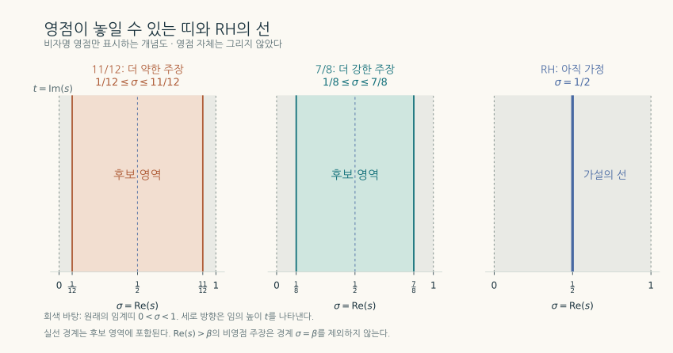
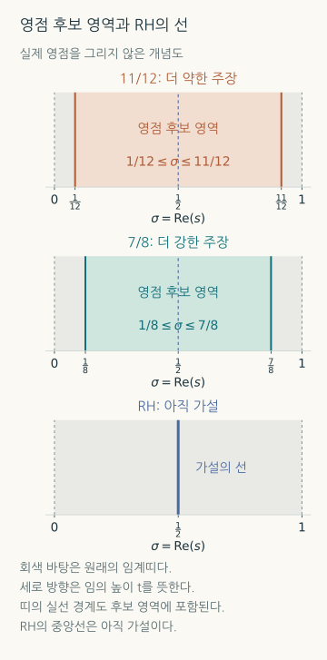
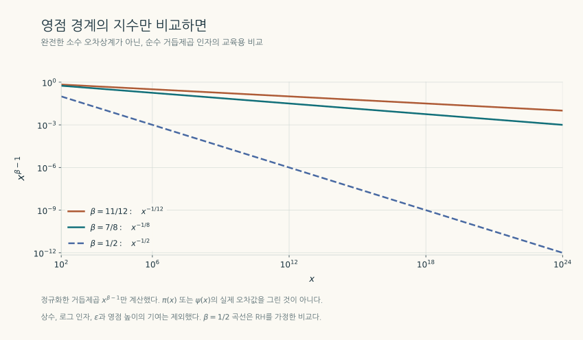
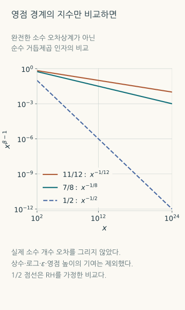
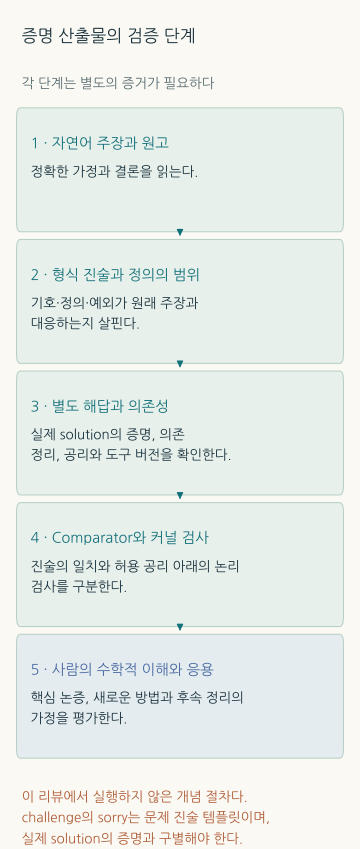

준리만가설과 AI 수학: 소수 분포의 경계와 증명의 검증
제타함수의 영점과 소수 개수의 오차를 잇는 원리부터 7/8·11/12 원고, 메타플렉틱 형식, Lean 검증과 알고리즘 응용의 범위까지
TECH REVIEW · 2026년 10월 20일 · 해석적 수론과 AI 보조 연구
내용 살펴보기
1. 소수의 위치를 얼마나 정확하게 설명할 수 있을까
2, 3, 5, 7, 11처럼 소수는 간단히 정의되지만, 어디에 얼마나 자주 나타나는지를 정밀하게 설명하는 일은 어렵다. 큰 수로 갈수록 소수가 드물어진다는 평균적 경향은 알려져 있다. 그러나 평균에서 얼마나 벗어날 수 있는지, 특정 나머지를 갖는 소수는 얼마나 고르게 나타나는지를 묻는 순간 문제가 깊어진다.
이 질문을 복소함수의 영점 문제로 바꾸는 것이 리만 제타함수다. 영점이 복소평면의 어디에 놓일 수 있는지를 제한하면 소수 분포의 오차도 제한할 수 있다. 리만가설은 모든 비자명 영점이 실수부 1/2인 직선 위에 있다고 주장한다. 준리만가설은 더 약하지만 여전히 강력한 목표다. 영점이 실수부 1에 접근하지 못하도록, 높이와 무관한 고정된 간격을 확보한다. [2,5,6]
2026년 10월 19일 Quanta Magazine의 Konstantin Kakaes는 OpenAI가 공개한 준리만가설 원고와 이를 읽는 수학자들의 반응을 보도했다. 이 글이 공유 링크의 원문이다. 공개 자료에는 실수부 7/8의 경계를 주장하는 긴 원고, 사람의 편집을 거친 11/12 대안 원고, 그리고 관련 Lean 형식화가 있다. 전문가들은 주로 짧은 대안 논증을 해석하고 있으며, 긍정적 평가와 상세 검토의 필요성이 함께 제기되고 있다. [1–4]
핵심 성과의 범위는 고정된 영점 배제 영역이다. 리만가설 자체의 1/2 경계는 여전히 남는다. 이 차이를 이해해야 수론적 파급력과 AI의 역할을 제대로 평가할 수 있다. 아래에서는 원고가 주장하는 수학, 공개 코드로 확인할 수 있는 것, 실제 응용에 추가로 필요한 조건을 나누어 설명한다.
2. 제타함수가 소수와 만나는 자리
복소수 에서 는 실수부, 는 허수부다. 실수부가 1보다 큰 영역에서는 제타함수를 무한급수와 소수에 대한 무한곱으로 동시에 쓸 수 있다.
오일러 곱을 전개하면 각 소수의 거듭제곱을 선택하는 조합에서 모든 양의 정수가 나타난다. 정수의 소인수분해가 유일하다는 성질이 이 등식의 배경이다. 따라서 제타함수에는 소수들의 정보가 한꺼번에 담긴다. 다만 위 급수·곱의 통상적인 수렴 등식에는 반드시 이라는 조건이 붙는다. 나머지 영역은 해석적 연속으로 다루며, 에는 단순극점이 있다. 원 기사의 직관적 설명을 이 조건 없이 옮기면 부정확하다. [5,6]
음의 짝수 −2, −4, …에 있는 영점은 자명한 영점이다. 관심의 중심인 비자명 영점은 인 임계띠에 놓인다. 리만가설은 그 위치를 띠의 중심선 하나로 좁힌다. 준리만가설은 어떤 고정된 를 찾아 오른쪽 반평면에서 영점을 배제한다.
여기서 고정된다는 말이 중요하다. 허수부가 커질수록 실수부 1에 가까워지는 고전적인 영점 배제 영역과 달리, 같은 가 모든 높이에 적용되어야 한다. 제타함수의 함수방정식이 주는 반사 대칭을 함께 쓰면, 비자명 영점의 실수부는 와 사이로 제한된다. [2,5]
| 구분 | 제타함수 비자명 영점의 실수부에 대한 범위 | 이 리뷰에서의 지위 |
|---|---|---|
| 임계띠 | 0과 1 사이 | 고전적 배경 |
| 11/12 대안 원고 | [1/12, 11/12] | 사람의 편집을 거친 별도 논증의 주장 |
| 7/8 원고 | [1/8, 7/8] | 더 강한 원고의 주장·공개 형식화 대상 |
| 리만가설 | 정확히 1/2 | 이번 결과가 해결하지 않은 가설 |
7/8은 11/12보다 작다. 오른쪽 경계를 더 왼쪽으로 옮기므로 7/8 결과가 더 강하다. 영점이 없다는 주장은 경계보다 엄격히 오른쪽인 열린 반평면에 관한 것이다. 경계선 자체의 영점까지 배제했다고 읽어서는 안 된다.


3. 복소평면의 경계가 소수 개수의 오차가 되는 이유
이하 소수의 개수를 라 하자. 소수정리는 가 와 점근적으로 같다고 말한다. 더 정밀한 평균 근사에는 를 쓴다. 여기서 로그는 자연로그다.
관계를 보기 편하게 만드는 함수가 Chebyshev의 다. 소수뿐 아니라 소수의 거듭제곱에도 가중치를 준다.
제타함수의 명시적 공식은 이 합을 주항 와 영점들이 만드는 진동 항으로 연결한다. 예를 들어 에서 점프의 양쪽 값을 평균한 를 사용하면 다음 구조를 얻는다. 영점 합은 비자명 영점을 중복도와 함께 세며 허수부의 높이를 대칭적으로 늘리는 극한으로 해석한다. [5,6]
영점 하나를 라 쓰면 다. 실수부 가 진동의 크기 증가율을 정한다. 주항 로 나누었을 때 이 항의 크기는 다. 를 1에서 고정된 거리만큼 떼어 놓으면, 그 증가율을 주항보다 작게 제한할 수 있다.
전체 오차를 얻으려면 모든 영점의 합과 절단 오차 등을 제어해야 한다. 따라서 이 한 항의 관찰을 곧바로 완전한 소수정리 오차식으로 쓰지는 않는다. 고정된 에 대해 모든 비자명 영점이 를 만족하면, 임의의 에 대해 다음이 성립한다. [6]
는 상계에 들어가는 상수가 고정한 와 에 의존할 수 있다는 뜻이다. 을 그대로 넣는 표기가 아니다. RH가 주는 더 강한 고전적 오차 와도 구분해야 한다. 고정된 작은 양의 를 택하면 오차의 거듭제곱이 1보다 작아진다는 점이 준리만 결과의 큰 변화다.


4. 제타함수 하나를 더 큰 가족 속에 넣다
새 원고의 명제는 제타함수 하나보다 넓다. 7/8 원고는 모든 Dirichlet -함수와 위의 유한 차수 Hecke -함수에 같은 경계를 주장한다. 주특성에 대응하는 의 극점은 허용한다. 11/12 원고도 같은 계열에서 더 약한 경계를 제시한다. 모든 수체나 모든 자동형 -함수에 대한 일반화 리만가설을 증명한 것은 아니다. [2,3]
Dirichlet 특성 는 나머지류의 곱셈 구조를 복소수 값으로 표현하는 주기적 함수다. 그 가중치를 넣으면, 처음에는 수렴 영역에서 다음을 얻는다.
이런 가중치를 조합하면 로 나눈 나머지가 인 소수를 골라낼 수 있다. 예를 들어 1, 5, 9, …처럼 나머지가 정해진 수열에서 소수가 얼마나 나타나는지를 다룬다. 단, 소수 분포를 논하는 표준적인 나머지류 조건은 이다. 나머지류를 분리하는 함수와 그 -함수의 영점이 연결되므로, 함수족 전체의 균일한 경계는 응용 범위를 넓힌다.
여기서 는 유리수에 을 더한 수체다. 그 안의 Eisenstein 정수와 3차·6차 잉여 특성이 증명에서 중요한 무대를 이룬다. Hecke -함수는 이런 수체의 산술을 담는 더 일반적인 틀이다. 독자가 모든 정의를 먼저 익힐 필요는 없지만, 함수 하나의 영점을 직접 추적하는 대신 연관된 가족과 평균을 활용한다는 접근은 기억할 만하다.
5. 기존 도구를 어떻게 연결했는가
이 절은 사람이 편집한 11/12 원고 §2의 논증 구조를 설명한다. 전체 증명을 재현하는 것은 아니다. 핵심은 Möbius 계수가 들어간 합에서 충분한 상쇄를 얻고, 이를 -함수의 영점 배제로 옮기는 것이다. Möbius 함수 는 제곱인수를 가진 정수에서는 0, 서로 다른 소인수가 개인 정수에서는 이다. 제타함수 역수의 Dirichlet 급수에 나타나므로 영점 문제와 연결된다. [3,6]
먼저 Eisenstein 정수에서 6차 특성으로 꼬인 Möbius 합의 가족을 만든다. ‘꼬임’은 항마다 산술적 위상 가중치를 넣는다는 뜻이다. 개별 합의 절댓값을 따로 더하는 대신, 가족 전체의 평균제곱에서 상쇄를 찾는다. Poisson 합산과 Gauss–Jacobi 관계가 이를 3차 Gauss 합과 연결한다. [3]
그 계수는 Kubota의 3차 메타플렉틱 세타 함수의 Fourier 계수로 해석된다. 메타플렉틱 형식은 여기서 서로 다른 합산 표현을 연결하는 변환 법칙을 제공한다. 세타의 Voronoi형 변환을 거치면 6차 특성의 세제곱인 2차 특성이 나타나고, 여러 2차 특성에 대한 합을 함께 제한하는 quadratic large sieve를 쓸 수 있다. 변환에 필요했던 세제곱 인자는 Möbius 반전으로 제거하며, 나머지 항은 추가 Poisson 변환과 재귀로 제어한다. 이 재귀와 나머지 추정이 논증의 어려운 부분이다. [3,7]
지수 11/12가 나오는 마지막 계산은 비교적 짧게 볼 수 있다. 여기서는 정수의 Möbius 함수를 소아이디얼 분해에 따라 확장한 를 사용한다. 고정한 유한 차수 Hecke 특성 , 매끄럽고 지지가 콤팩트한 가중함수 , 에 대해 다음 합을 생각한다. [3]
합은 2, 3 및 의 도체와 서로소인 0이 아닌 정수 아이디얼에 걸치며, 는 6차 잉여 특성이다. 은 대수적 노름이고 는 가족의 크기 제한이다. , , 에서 원고의 평균제곱 상계는 다음과 같다. 의 숨은 상수는 에 의존할 수 있다.
인 행에서는 6차 특성이 대부분 1이 되어 와 비교할 수 있다. 노름이 규모인 소수 들을 이용하면 다음 상계가 나온다.
를 작게 택하면 첫 항의 지수는 11/6에 임의로 작은 양을 더한 값이고, 제곱근을 취해 형태를 얻는다. 여기서 은 작은 손실을 흡수하도록 다시 잡을 수 있다. 이 계산이 짧다고 해서 평균제곱 추정 자체가 쉬운 것은 아니다. 7/8 원고는 더 긴 모멘트·보상 인자 논증을 사용하므로, 위 두 줄을 조금 조정하면 7/8까지 나온다고 해석해서도 안 된다.
선행연구의 역할도 정확히 구분해야 한다. Dunn–Radziwiłł의 Bias in cubic Gauss sums: Patterson’s conjecture는 2021년 프리프린트, 2024년 Annals 논문이다. 2022년은 Quanta가 관련 연구를 보도한 해다. 그 연구의 소수에 대한 점근식은 GRH 조건부이지만, 이번 원고가 가져오는 세타의 전개·합산 공식은 무조건부 도구다. 조건부 최종 결론을 전제로 준리만가설을 증명하는 순환논증이라고 설명하면 원고의 논리와 다르다. [2,7]
6. 소수 분포 연구에는 무엇이 달라질까
실용적인 첫 변화는 정량적인 오차식이다. Fiori–Jaskari의 후속 연구는 비자명 영점의 실수부가 7/8 이하라는 조건을 결합해 다음의 명시적 상계를 제시한다. 여기서 는 앞서 정의한 가중 소수 합이며, 로그는 자연로그다. [8]
이 식은 ‘어떤 상수가 있다’에서 더 나아가 계산에 넣을 계수와 적용 범위를 준다. 리뷰에서 우변을 로 나누어 계산하면 에서 약 0.03850, 에서 약 0.0001770이다. 이는 각각 약 3.85%, 0.0177%의 상대오차 상계이며 실제 오차를 측정한 값이 아니다. 후속 논문은 7/8 결과를 가정한 귀결로 제시하며, 원증명 전체의 독립 검증을 뜻하지는 않는다. 또한 의 상계와 의 상계를 같은 식으로 취급할 수 없다.
두 번째 변화는 산술진행의 소수다. 11/12 원고 Corollary 1.2는 와 의 차이에 규모의 균일한 절대오차 상계를 주장한다. 는 와 서로소인 나머지류의 수다. 주항에 가 있으므로 가 커지면 주항이 작아질 수 있다. 따라서 모든 에서 상대오차까지 작다는 뜻은 아니다. [3]
세 번째는 Landau–Siegel 예외적 영점 문제다. 실수 Dirichlet 특성의 -함수에 실수부 1에 지나치게 가까운 실수 영점이 있을 가능성은 여러 수론적 추정의 효과성을 어렵게 했다. 공개 형식화 범위에는 원시 비주특성인 실수 Dirichlet 특성 의 도체 와 그 -함수의 실수 영점 에 대해, 하나의 상수 로 를 얻는 진술도 포함된다. 이는 모든 실수 영점을 없앤다는 뜻이 아니며, 해당 문서에는 의 명시적 값도 없다. [9]
따라서 응용 논문을 읽을 때는 어떤 함수족의 어떤 경계를 사용하는지, 상수가 명시적·유효한지, 변수 범위가 어디까지인지 확인해야 한다. 짧은 소수 구간에 대한 귀결이 나온다는 사실만으로 기존 최고 기록보다 짧은 구간을 얻었다고 할 수도 없다. 다른 방법이 이미 더 강한 특정 구간 결과를 줄 수 있기 때문이다.
7. Lean이 확인하는 것과 사람이 확인할 것
형식 증명에서는 정리의 진술과 논리적 추론을 코드로 표현하고, 작은 검증 핵심인 커널이 증명 항의 타당성을 검사한다. 모델이 자연어로 ‘증명했다’고 말하는 것보다 강한 검증 수단이지만, 어떤 명제를 어떤 정의 아래에서 검사했는지를 함께 봐야 한다. [10,15]
가족 003의 공개 범위 문서는 제타함수·모든 Dirichlet 특성·지정한 Hecke 함수족의 7/8 경계와 예외적 실수 영점 간격을 구분한다. 원고의 뒤쪽 응용 전체를 형식화했다고 하지는 않는다. 저장소의 Comparator 설정은 공개된 문제 진술과 별도 solution 모듈의 정리를 비교하고, 허용된 공리 등의 조건을 검사하도록 구성된다. [9,15]
여기서는 두 파일의 역할을 혼동하기 쉽다. QuasiRiemannHypothesis.lean이라는 challenge 파일에는 sorry가 있다. 이것은 비교할 문제 진술의 자리표시자이며 실제 증명은 별도 solution 모듈에 연결되어 있다. 이 파일 하나만 보고 증명이 비어 있다고 결론 내릴 수 없다. 반대로 별도 모듈이 있다는 것만으로 독립 재검증이 끝났다고 할 수도 없다.
확인한 Comparator 설정은 propext, Quot.sound, Classical.choice를 허용공리로 열거하며, 해당 설정의 enable_nanoda는 false다. 마지막 값은 추가 커널 옵션의 설정값이지, 기본 Lean 검사가 없다는 뜻이 아니다. 저장소의 review.status: unchecked 역시 검토 메타데이터이며 그것만으로 커널 검사가 실패했다고 해석할 수 없다. 이 리뷰는 공개 진술·정의·연결 경로를 읽어 확인했으며, 전체 라이브러리를 깨끗한 환경에서 다시 빌드하거나 Comparator를 독립 실행하지는 않았다. [9,10,15]

극점인 1에도 함수 값이 있는 이유
구체적인 예를 보자. 수학의 제타함수는 에서 극점을 가지지만, Mathlib의 riemannZeta : ℂ → ℂ는 모든 복소수에 값을 주는 총함수다. 사용한 라이브러리 버전은 그 점에 다음의 특별한 값을 부여한다. 는 Euler–Mascheroni 상수다. [11]
이는 해석적 제타함수의 발산을 없앴다는 뜻이 아니다. 코드의 함수를 전체 입력에 정의하기 위한 관례다. 실제 solution 경로는 을 별도 분기로 처리하고, 나머지 경우에는 Dirichlet -함수의 비영점 정리를 적용한다. 따라서 challenge에 조건이 없다는 이유만으로 잘못된 정리라고 판단하면 안 된다. [11]
이 사례는 의미 검토가 왜 필요한지 보여 준다. 커널은 코드 안의 명제와 증명 사이의 관계를 검사한다. 사람이 의도한 수학적 대상·가정·예외가 그 코드와 맞는지는 정의까지 읽어 확인해야 한다. 같은 함수 이름이나 정리 이름만 비교해서는 충분하지 않다.
8. AI가 한 일은 공개 기록으로 어디까지 알 수 있을까
이번 발표는 미공개 내부 모델을 사용한 연구 평가에서 나온 것이다. 저장소는 약 4,000개 문제를 모델에 제시했다고 설명하며, 일반적인 고정 절차의 평균 계산량을 해당 모델의 ChatGPT Pro thinking 약 3시간에 해당하는 양으로 표현한다. 그러나 제타함수 영점 배제 연구는 그 절차의 예외로 명시되어 있다. 준리만 결과를 ‘일반 사용자가 3시간 만에 재현할 수 있는 증명’으로 소개할 근거는 없다. 공개 자료만으로 이 결과의 모델 버전·총 계산량·전체 탐색 과정을 확정할 수도 없다. [4]
발표 수치도 단위를 구분해야 한다. Quanta는 10월 6일 발표를 377개 결과와 722편 원고로 소개했다. 이 리뷰가 고정한 10월 12일 커밋의 저장소 목록은 372개 family와 719편 manuscript다. 보도의 ‘결과’와 저장소의 ‘family’가 동일한 집계 단위라고 단정해서는 안 된다. family 하나에는 주결과, 대안 증명과 귀결 원고 등이 함께 들어갈 수 있다. 수정 이력에는 Hodge 관련 3편 철회와 다른 원고들의 변경이 기록돼 있다. 따라서 최초 보도 숫자를 현재의 ‘검증 완료 정리 수’로 바꾸어 쓰면 안 된다. [1,4]
AI 수학의 다른 사례도 작업의 종류를 구분하는 데 도움이 된다. 2024년 공개된 AlphaProof의 IMO 시연은 사람이 형식화한 문제를 입력으로 받아 형식 언어 안에서 탐색·검증하는 과정을 설명한다. 그 조건과 미공개 모델의 연구문제 탐색은 서로 다르다. 어느 한쪽의 성공률이나 소요시간을 다른 쪽의 재현 성능으로 옮길 수 없다. [14]
이번 결과에서 흥미로운 것은 기존 수학을 연결할 후보를 넓게 찾는 능력이다. 그 연결이 다른 연구자가 다시 사용할 수 있는 지식이 되려면 가정과 선행연구를 명료하게 쓰고, 핵심 보조정리를 분리하며, 사람이 읽을 수 있는 설명을 만들어야 한다. 발견한 결과의 수와 그 결과를 이해·검증·확장하는 데 드는 비용을 함께 평가해야 한다.
9. 소수 판정과 암호 응용은 어떤 조건을 더 요구할까
소수 분포, 소수 판정, 인수분해는 서로 다른 문제다. 부근에 소수가 얼마나 있는지는 분포의 질문이다. 주어진 정수가 소수인지 결정하는 것은 판정의 질문이다. 주어진 합성수의 소인수를 출력하는 것은 인수분해다. 분포를 더 잘 통제하는 정리만으로 마지막 문제를 푸는 알고리즘이 주어지는 것은 아니다.
리만형 가정과 알고리즘의 연결은 오래전부터 있었다. Miller의 1976년 연구는 확장된 리만가설 아래의 소수 판정을 다룬다. 하지만 준리만 결과와 그 알고리즘이 요구하는 ERH를 같은 가정으로 취급하면 안 된다. 그리고 무조건적인 결정적 다항시간 소수 판정은 이미 AKS의 PRIMES is in P로 알려져 있다. 이번 결과가 처음으로 빠른 소수 판정을 가능하게 했다고 설명할 수는 없다. [12,13]
암호에 대한 실질적인 주장을 하려면 어떤 문제의 입력·출력인지, 실행시간이 어떻게 개선되는지, 어떤 크기의 정수에서 무엇을 측정했는지까지 필요하다. 이번에 확인한 자료에서는 준리만 결과로 실제 RSA 인수분해나 암호 해독 성능을 입증한 근거가 없다. 즉각적인 보안 성능 수치보다, 조건부 알고리즘 분석 중 어느 부분이 해당 함수족의 영점 경계만 요구하는지 다시 검토하는 연구가 자연스럽다.
10. AI 수학 연구를 판단하는 실질적인 순서
| 먼저 확인할 대상 | 확인할 질문 | 이번 사례에서의 예 |
|---|---|---|
| 정리의 정확한 범위 | 어떤 함수·변수·경계·예외를 다루는가? | 7/8과 11/12, 주특성의 극점, 지정한 Hecke 함수족 |
| 원고의 논리 | 어느 보조정리가 새롭고 어떤 선행 결과를 쓰는가? | Möbius 평균제곱, 세타 변환, 조건부 결과와 무조건부 도구의 구분 |
| 형식 진술과 정의 | 논문이 말하는 대상과 코드가 같은가? | riemannZeta의 총함수 관례와 1에서의 분기 |
| 실제 검증 실행 | 어떤 버전·공리·의존성으로 무엇을 다시 검사했는가? | Comparator 대상 정리와 별도 solution 모듈 |
| 응용으로의 이전 | 상수·효과성·변수 범위·알고리즘 비용이 확보됐는가? | 명시적 상계와 산술진행의 절대오차 |
이 순서는 리뷰의 연구·개발 적용 제안이다. 논문 PDF, 고정한 저장소 커밋, 대상 정리와 라이브러리 버전, 검증 명령과 실제 결과를 묶어 보관하면 후속 검토가 쉬워진다. 일부 정리만 형식화했으면 그 범위를 밝히고, 수치 예시는 무한한 경우에 대한 증명과 구분해야 한다.
준리만 결과의 파급력은 소수가 조금 더 규칙적으로 보인다는 인상보다 구체적이다. 영점의 위치에 고정된 제한을 두고, 이를 소수 분포의 정량적 오차와 관련 -함수의 문제로 옮기는 것이다. AI 연구의 관점에서는 넓은 탐색에서 찾아낸 논증을 다른 사람이 검증하고 재사용할 수 있는 수학으로 만드는 과정까지가 중요한 과제다. 2026년 10월 20일 현재 이 두 과정을 함께 살펴보는 것이 이 결과를 평가하는 적절한 출발점이다.
참고문헌과 원문
- Kakaes, K. AI Proved the Quasi-Riemann Hypothesis. What Happens Now? Quanta Magazine, 2026-10-19. 기사. 전문가의 반응과 사람의 이해·검토 현황에 관한 보도이며 원증명 전체의 독립 검증을 대신하지 않는다.
- OpenAI. The Quasi-Riemann Hypothesis: A Zero-Free Half-Plane Re(s)>7/8. 2026-09-30 원고, 199쪽. 고정 버전 PDF. Theorem 1.1 및 서론의 함수족·선행 결과 조건.
- OpenAI. The Quasi-Riemann Hypothesis, alternate 11/12 proof, 2026-10-05, 49쪽. 고정 버전 PDF · 원고 안내. Theorem 1.1·Corollary 1.2, §2 및 식 (2.2)–(2.5). 사람의 편집을 거친 별도 논증.
- OpenAI. Sharing AI progress in mathematics, 2026-10-06 발표, 10-15 갱신. 공식 발표 · 저장소 README · 수정 이력. 저장소 근거는 커밋
1581d4c에 고정했다. - Bombieri, E. The Riemann Hypothesis. Clay Mathematics Institute 문제 해설. 공식 PDF. 제타함수·영점·RH·소수 분포의 기초.
- Sutherland, A. V. MIT 18.785, Number Theory I, Fall 2019. Problem Set 8, Problem 1의 명시적 공식과 (f)의 영점 경계에 따른 오차. Lecture 17은 함수방정식·임계띠 배경.
- Dunn, A.; Radziwiłł, M. Bias in cubic Gauss sums: Patterson’s conjecture. Annals of Mathematics 200(3), 967–1057 (2024). 출판 원문 · DOI · arXiv:2109.07463. 2021년 프리프린트와 2024년 출판을 구분한다.
- Fiori, A.; Jaskari, M. Explicit bounds for the prime number theorem. arXiv:2609.23222v2, 2026-10-08. Theorem 1.4와 7/8 가정을 대입한 명시적 상계.
- OpenAI. Family 003 formalization scope and configurations. 범위 문서 · challenge 진술 · Comparator 설정 · 형식화 목록. 이 리뷰의 확인은 코드·진술의 정적 검토다.
- Lean. Theorem Proving in Lean 4, Axioms and Computation. 공식 문서. 공리·증명·계산과 검증의 배경.
- Mathlib. NumberTheory/Harmonic/ZetaAsymp.lean,
riemannZeta_one및riemannZeta_one_ne_zero. 라이브러리 고정 버전. OpenAI의 실제 1 분기. - Agrawal, M.; Kayal, N.; Saxena, N. PRIMES is in P. Annals of Mathematics 160, 781–793 (2004). 출판 원문 · DOI. 무조건 결정적 다항시간 소수 판정.
- Miller, G. L. Riemann’s Hypothesis and Tests for Primality. Journal of Computer and System Sciences 13(3), 300–317 (1976). 저자 공개 PDF. ERH 조건과 소수 판정의 연결.
- Google DeepMind. AI achieves silver-medal standard solving International Mathematical Olympiad problems, 2024-07-25. 공식 설명. AlphaProof·AlphaGeometry 2 시연의 문제 형식화와 계산 조건.
- Leanprover. Comparator. 공식 저장소 · OpenAI의 실행 안내. challenge·solution 비교와 허용공리 검사 구성을 읽었으며, 이 리뷰에서 해당 전체 검증을 재실행하지 않았다.